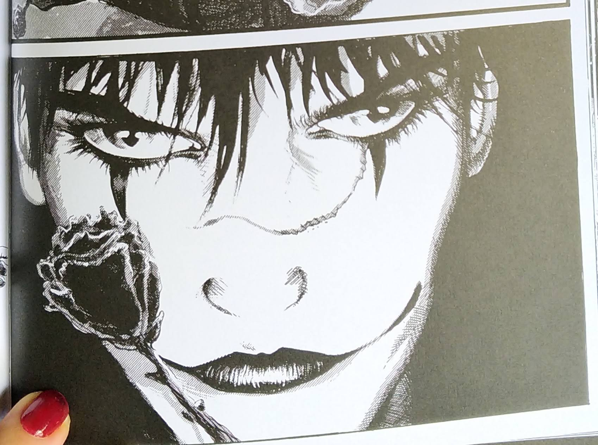
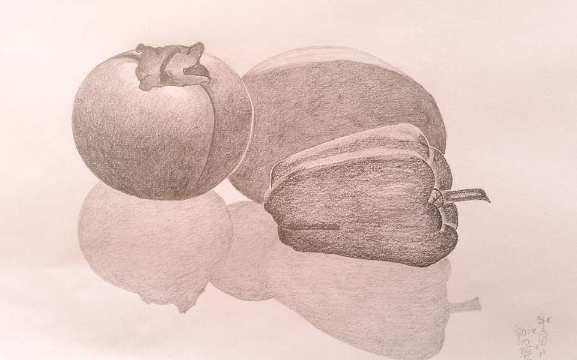

Sobre Mim
Olá! Meu nome é Geane Aparecida Alves, tenho 41 anos de idade e sou estudante de Análise e Desenvolvimento de Sistemas. Sou apaixonada por novas experiências digitais.
Nos meus momentos livres, adoro assistir séries ou filmes, estudar alguma novidade, aprender mais sobre mim e sobre o que é misterioso ao redor. Durante a passagem dos anos, descobri novidades ao meu respeito e mudei muito de carreira, ou nem cheguei a ter uma carreira, o lado complicado é que nunca tive tempo para um conhecimento profundo por onde passei. Eu aprendo rápido, me interesso rápido e algumas vezes, me decepciono rápido também.
Meu objetivo é aprender e trabalhar com Linguagem de Programação, também sou licenciada em Letras Português. Tenho uma coleção de livros bem interessante que varia desde livros instrutivos de faculdade como romances, crescimento espiritual, clássicos da Literatura Universal e quadrinhos. Me interesso muito por alguns tipos de artes, como a arte gráfica de algumas HQs, como na HQ de O Corvo de James O'Barr, bem como escrita de poemas, embora tenha sido há um longo tempo.
Também gosto muito de fotografia, seja foto de paisagem ou de objetos, em alguns casos, até foto de foto. Embora não esteja praticando com frquência a fotografia, tenho uma grande coleção de imagens adquiridas ao longo do tempo e o interessante ao olhar para elas é que a passagem do tempo fica bem descatada. Abaixo uma foto que tirei na primeira metade de 2024, numa manhã por volta das sete e meia. A foto foi tirada com celular, na ocasião, a camera dele era muito boa.

Fiz algumas aulas de desenho, sempre gostei de desenhar, não tive condições de continuar com as aulas e aprendi muito pouco, mas aprendi um pouco sobre luz e sombra, também gosto muito de colorir, tenho uma pasta com muitas imagens impressas, algmas no estilo desenho minimalista, outras com paisagem ou animais ou flores. Realmente ajuda muito a relaxar, aliviar o estresse, sem contar que ao terminar é uma satisfação enorme, eu uso lápis de cor especiaias da marca Faber Castell e canetas coloridas para os desenhos e para desenhar eu uso lápis da Faber Castell para desenhos, tenho nove tipos de lápis grafite difentes.
